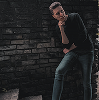

Placinta Adrian-Stefan
Povestea este una cat se poate de simpla. Totul a inceput in liceu, perioada in care majoritatea dintre noi incepem sa ne punem intrebari despre ce dorim sa facem in viitor, cum dorim sa evoluam, cu alte cuvinte „ne cautam calea”, mai exact acel ceva ce ne defineste ca persoane. Inca de mic copil m-au pasionat noutatile din tehnologie, mereu fiind la curent cu ultimele aparitii, insa nu am avut tangente prea mari in ceea ce priveste programarea. La varsta de 12 ani am scris prima linie de cod si acest lucru mi s-a parut super interesant la acel moment al vietii.
Intotdeauna mi-am dorit sa fac ceva util, acel ceva ce poate lasa o amprenta pozitiva in societate, motiv pentru care, la finele clasei a 8-a, doream sa optez pentru specializarea Stiinte ale Naturii, ca ulterior sa studiez medicina si sa ii pot ajuta
pe cei din jurul meu. Mereu am considerat ca actiunile noastre, in raport cu ceilalti, ne definesc ca oameni, indiferent de comportamentul celor din jur.
Programarea a fost la inceput, pentru mine, doar un hobby, in ideea in
care nu alocam foarte mult timp pentru ea si nu consideram la momentul respectiv ca se pliaza asupra viziunii mele.Pe parcursul liceului, probabil din cauza modului monoton de predare al biologiei, fara prea multe implicatii active, spre rusinea
mea, mi-am pierdut pasiunea pentru aceasta materie. In aceasta situatie, m-am reapucat de vechiul meu hobby, anume programarea. Si NU, programarea nu a reprezentat "o rezerva", ci pur si simplu a rezistat testului timplui, pentru mine, evoluand
chiar mai mult si devenind mult mai facila de invatat, prin aparitia diverselor tutotoriale/cursuri. Vazand cum inteligenta artificiala a evoluat si diversele lucruri pe care algoritmii sunt in stare sa le faca, mi-am dat seama ca vietile
oamenilor pot fi influentate in mai bine cu ajutorul programarii, asa ca am decis sa nu ma plafonez si sa-mi urmez visul mai departe, indiferent de evolutia sa.
Copyright © Placinta Adrian-Stefan